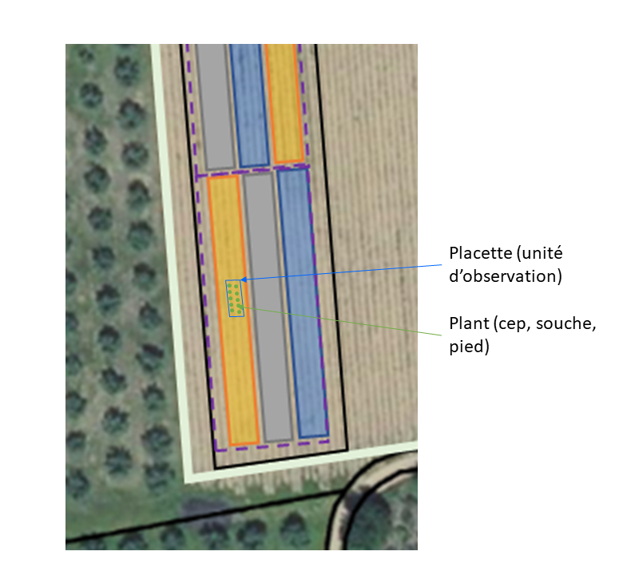

Annexe B — Schéma type d’une expérimentation
Au vignoble , l’expérimentation est généralement mis en place sur une parcelle ou unité culturale. Le dispositif expérimental est mis en place sur tout ou partie de la parcelle (Figure B.1), avec laquelle il partage un certain nombre de caractéristiques en dehors des traitements appliqués dans le cadre de l’expérimentation.
On appelle traitement expérimental toute combinaison de niveaux ou de modalités des facteurs étudiés. Si un seul facteur est étudié, il y a identité entre un traitement et un niveau.
La parcelle unitaire (ou élémentaire) est la plus petite unité expérimentale qui reçoit un traitement expérimental. Dans les essais au champ, elle est constituée d’une certaine étendue de terrain et d’un certain nombre de plants. L’ensemble des parcelles unitaires définit le dispositif expérimental.
L’unité d’observation peut-être restreinte à une sous-partie de la parcelle unitaire (Figure B.1 (b)). En vigne, le terme de placette est souvent utilisé pour l’unité d’observation. Enfin, chaque placette est constituée d’un ensemble de plants de vigne, aussi appelés pieds, souches ou ceps.

